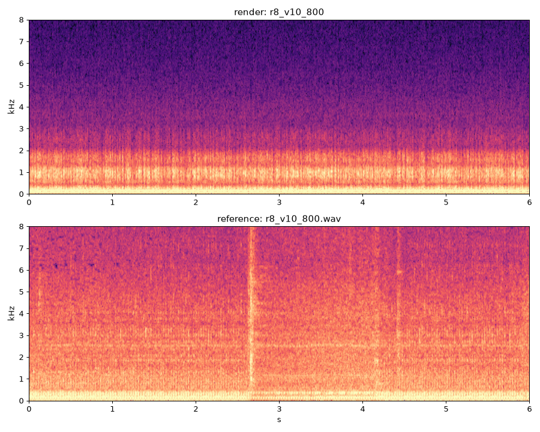
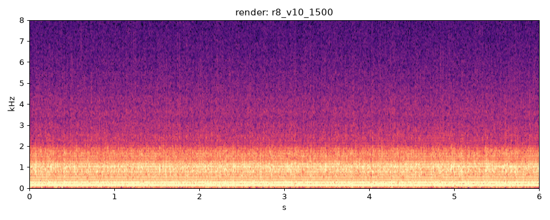
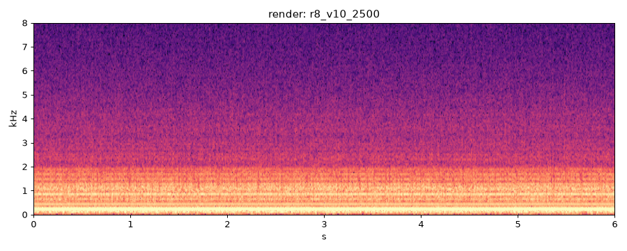
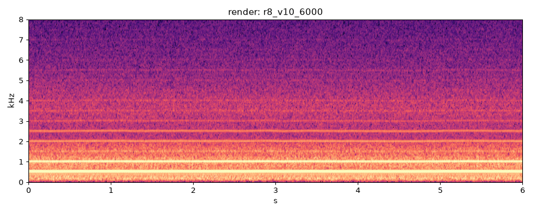
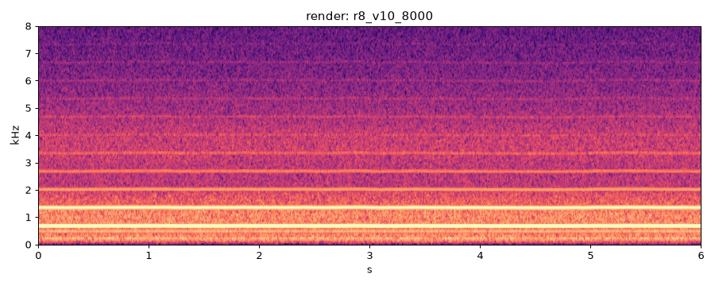
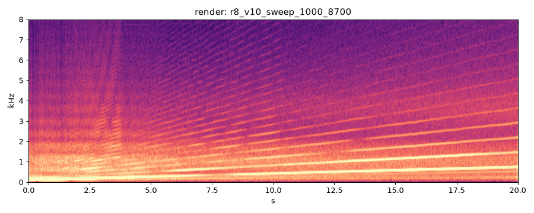

| check | value |
|---|---|
| deterministic | PASS |
| nan_free | PASS |
| below_full_scale | PASS |
| rtf_60s | 4.35 |
| rtf_ok | FAIL |
| firing_freq_ok | PASS |
current best
previous best
reference
| metric | value | vs prev |
|---|---|---|
| multi-scale STFT dist | 1.8995 | +0.031 |
| firing freq error % | 0.034 | +0.025 |
| half-order level dB | -14.1 | |
| harmonic RMS err dB | 5.69 | -2.916 |
| mel L1 | 3.3956 | +1.464 |
| MFCC cosine | 0.0445 | +0.021 |
| pulse env L2 | 0.3666 | +0.025 |
| HNR dB | 11.3 | |
| band balance L1 | 0.357 | |
| cycle contrast | 1.64 | |
| crest dB | 12.1 | |
| centroid Hz | 557 | |
| flatness | 0.0000 | |
| max_abs | 0.128 | |
| rtf | 4.030 | |
| peak_cyl_pressure_bar | 11.860 |

current best
previous best
| metric | value | vs prev |
|---|---|---|
| firing freq error % | 0.039 | +0.004 |
| half-order level dB | -15.5 | |
| HNR dB | 10.6 | |
| cycle contrast | 1.34 | |
| crest dB | 13.3 | |
| centroid Hz | 748 | |
| flatness | 0.0000 | |
| max_abs | 0.104 | |
| rtf | 3.890 | |
| peak_cyl_pressure_bar | 28.420 |

current best
previous best
| metric | value | vs prev |
|---|---|---|
| firing freq error % | 0.035 | -0.001 |
| half-order level dB | -11.9 | |
| HNR dB | 18.4 | |
| cycle contrast | 1.20 | |
| crest dB | 8.1 | |
| centroid Hz | 654 | |
| flatness | 0.0000 | |
| max_abs | 0.133 | |
| rtf | 3.790 | |
| peak_cyl_pressure_bar | 44.090 |

current best
previous best
| metric | value | vs prev |
|---|---|---|
| firing freq error % | 0.034 | +0.011 |
| half-order level dB | -13.6 | |
| HNR dB | 14.9 | |
| cycle contrast | 1.13 | |
| crest dB | 10.0 | |
| centroid Hz | 1049 | |
| flatness | 0.0001 | |
| max_abs | 0.058 | |
| rtf | 3.850 | |
| peak_cyl_pressure_bar | 70.100 |
current best
previous best
| metric | value | vs prev |
|---|---|---|
| firing freq error % | 0.034 | -16.161 |
| half-order level dB | -11.1 | |
| HNR dB | 19.7 | |
| cycle contrast | 1.18 | |
| crest dB | 7.9 | |
| centroid Hz | 1182 | |
| flatness | 0.0000 | |
| max_abs | 0.086 | |
| rtf | 3.980 | |
| peak_cyl_pressure_bar | 99.410 |

current best
previous best
| metric | value | vs prev |
|---|---|---|
| firing freq error % | 0.034 | -0.096 |
| half-order level dB | -12.5 | |
| HNR dB | 20.2 | |
| cycle contrast | 1.18 | |
| crest dB | 9.0 | |
| centroid Hz | 1531 | |
| flatness | 0.0001 | |
| max_abs | 0.097 | |
| rtf | 3.870 | |
| peak_cyl_pressure_bar | 99.830 |

| metric | value | vs prev |
|---|---|---|
| HNR dB | 20.8 | |
| crest dB | 12.6 | |
| centroid Hz | 1124 | |
| flatness | 0.0000 | |
| max_abs | 0.251 | |
| rtf | 4.350 | |
| peak_cyl_pressure_bar | 113.950 |
